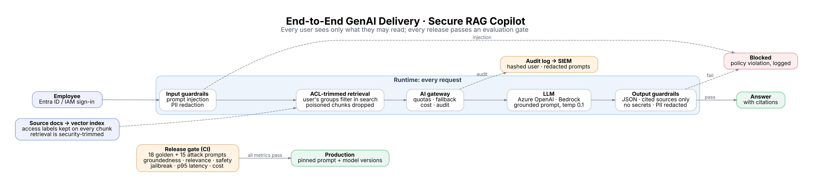
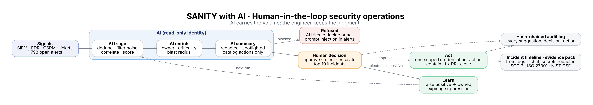

Ramya Kanderi
Senior Application Security and DevSecOps Engineer with 8+ years securing software at enterprise scale, from CI/CD security gates to AI and LLM application security.

Enterprise CI/CD Security Gate Platform
Policy-driven SAST, SCA, secrets and container gates across 300+ application pipelines. 74% fewer critical CVEs, 60% fewer false positives.
Read case study →
AI/LLM Application Security Program
Threat-modeled controls, runtime guardrails and automated adversarial testing for Azure OpenAI and LangChain applications.
Read case study →
Zero Trust Remote Access on Azure
Conditional Access baseline, eligible-only admin access through PIM, and Sentinel detections, all as Terraform, KQL and Python.
Read case study →
End-to-End GenAI Delivery: Secure RAG Copilot
A RAG copilot built from ideation to production: per-user access control, prompt-injection guardrails, an AI gateway and a six-metric evaluation release gate.
Read case study →
AI Security Engineer Toolkit
Four CI-gated tools: 500 scanner findings triaged to 12 reviewed fixes, AI agent threat models as code, AI coding-assistant governance and OWASP LLM coverage.
Read case study →
SANITY with AI: Human-in-the-Loop Security Operations
1,798 alerts triaged to 10 ranked incidents with owner and blast radius. AI summarises, a human decides, and guardrails keep the AI itself secure.
Read case study →